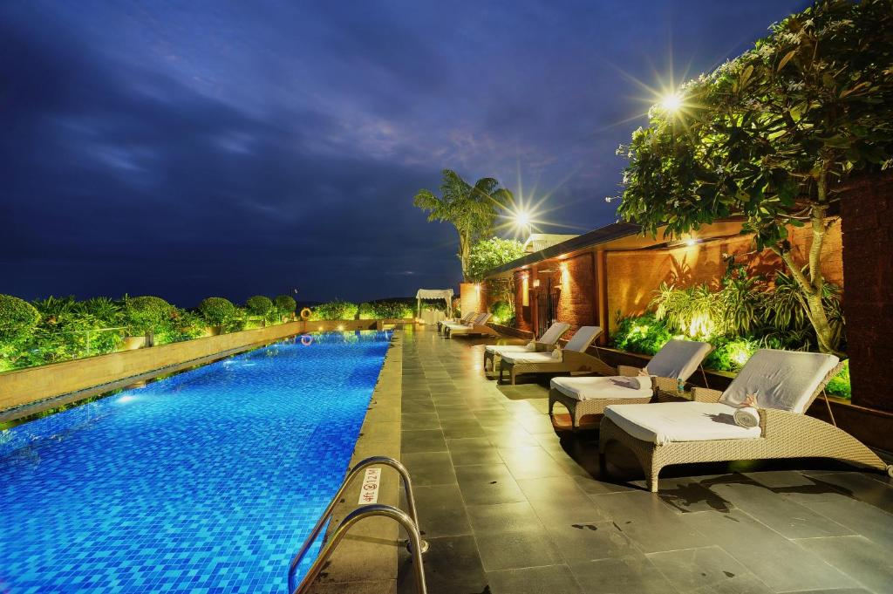

Cost and Rules
Per night:Rs.9209+Rs.1658(taxes and fees)
Pets are not allowed at the property.
Overview
Hotel 4 is a great choice for travellers looking for a 5 star star hotel.This Hotel stands out as one of the highly
recommended hotel.From all the 5 Star hotels, Hotel 4 is very much popular among the tourists. A smooth
check-in/check-out process,flexible policies and friendly management garner great customer satisfaction for this
property.The Hotel has standard Check-In time as 02:00 PM and Check-Out time as 12:00 PM.It is a family-friendly
property.
What our guests think
- Good staff
- Comfortable stay
- Nice room
- Delicious food
- Good place
are some highly appreciated and talked about aspects of the Hotel 4.The property is rated very good by 72% of the
guests,20% have rated it good,4% have rated it average,5% have rated it bad.In terms of Location 100% people like
the location of Hotel 4 and 65% said that property is Easily Accessible.Safety And Hygiene is the top priority
for the Hotel 4 with score 88%.78% Guests like the Thermal Screening feature.Staff Hygiene feature is liked by
90% users.Hotel 4 provides a top class Service Quality as 100% guest liked it.100% guests like the Room Service
quality. 100% guests like the Reception Area.Overall Food of Hotel 4 is liked by the 100% guests.Hotel 4's
Amenities are liked by the 91% of guest. Restaurant is liked by the 100% guests.90% guest said Wi-Fi of Hotel 4
was good.Hotel 4 also provides parking to their guest.Overall score for the parking amenity is 100%. Also 100%
guest said that Television was working in their rooms.